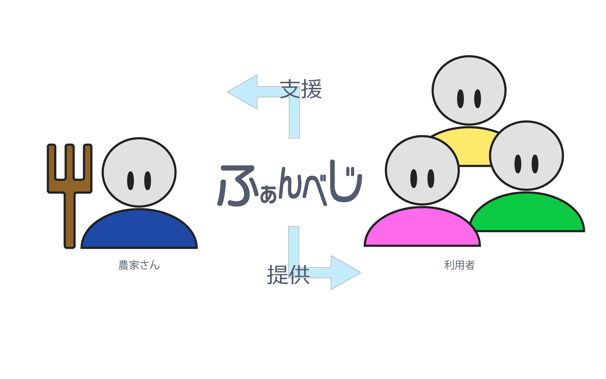

ふぁんべじとは、「農業」と「人」を繋ぐサービスです。
誰でも気軽に野菜作りを楽しんでほしいという思いが込められています。
「やったことない」「場所がない」「ちゃんと育つか不安」「趣味としてやってみようかな」・・そんなあなたを手助けします！
ぜひ楽しく野菜を育ててみませんか・・・？
「農業を支援」・・・農業体験やイベントを通じて農業を支援していきます。
ふぁんべじでは育てる野菜として「トマト・ラディッシュ」のつをおすすめします。
理由は↓
「トマト」・・・・・・トマトは人気が高く、家庭菜園でトマトから始める人が多いので、初心者でも育てやすい。
「ラディッシュ」・・・ラディッシュは季節を選ばずに好きな時から育てることができる。
ふぁんべじオリジナルの栽培キットを販売しています。野菜作りに必要なモノはすべて揃えてありますので、手軽に始めることができます。詳細は栽培キットの画面をご覧ください。
ふぁんべじでは、より楽しんで野菜を育てていくために、アプリの提供をしています。
農家の方、お友達とのやり取り・日記・お役立ちコーナーがあります。水やりをするタイミングで通知がくるように設定することができます。
野菜を育てていく中で、困ったことや分からなくなることがあると思います。そんな時は・・・このアプリを使って農家さんからのアドバイスをもらいましょう！
また、このアプリにはポイント制度があります。このポイントは、農業体験を申し込む時や栽培キットを購入する時に使うことができます。
ポイントの貯め方↓
ログインする(1ポイント)
日記をつける(5ポイント)
ポイントの使い方↓
100ポイントで農業体験1回分
500ポイントで栽培キット1つ購入可能
ポイントを貯めて、農業体験をしてみましょう！！
種まきから収穫まで楽しく育てましょう！！
セット内容
１,植木鉢4つ
２,種(トマトかラディッシュ)
３,土
500円(税込)
苗の成長に合わせて、植木鉢もステップアップさせます。
この植木鉢は「土に還る」素材を使用しています。使わなくなった植木鉢は土に埋め、何年後かに分解され、やがて土に還っていきます。とても環境に優しい植木鉢です。
ふぁんべじアプリのQRコードが記載されています。ダウンロードして農家さんやお友達と交流してみましょう！
左の画像は、種をまく時に使う鉢です。
大きさは手のひらサイズです。
芽が出たら、左の画像の鉢に植え替えます。
ステップ１の鉢より二回りほど大きいサイズです。
葉っぱが増えてきたら、左の画像の鉢に植え替えます。
植え替える時に苗が折れてしまわないよう注意しましょう。
花が咲き始めたら、左の画像の鉢に植え替えます。
実がなるのを待ちましょう。
収穫し、美味しく召し上がってください！！
野菜を育ててみて、「楽しい」「もっとやりたい」「農業やってみようかな」などと思った方に農業体験を案内します。
初心者コース・挑戦者コースの二つから選ぶことができます。※初回は無料です。
アプリで貯めたポイントを使うこともできます。※初回は無料なので、2回目以降に使いましょう。
お申し込みは下のお問い合わせフォームからお願いします。お申し込みの際には、お名前・連絡先(メールアドレスか電話番号)・コース・参加人数の記載をしてください。
農業を一度もやったことがない方におすすめのコースです。農業をやったことがある人も大歓迎です。
実際に農業をやりながら、農業について楽しく学びましょう。
1人だと不安に思う方もいるかと思います。ご家族やお友達と一緒にすることもできます。ぜひみなさんで体験してみませんか？
持ち物は、軍手・汚れてもよい服・汚れてもよい靴です。(他の必要な道具は現地に用意されています。)
農業をやったことがある人、これから農業を本格的にやってみたい方におすすめのコースです。家では育てることが難しい野菜にチャレンジできます。
持ち物は、軍手・汚れてもよい服・汚れてもよい靴です。(他の必要な道具は現地に用意されています。)
お名前
連絡先
コース選択
参加人数
お問い合わせ内容